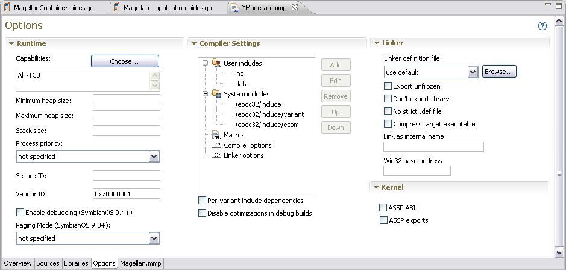

The MMP editor options window allows you to edit compiler, linker, and runtime settings. The MMP editor options window is shown in Figure 1.

Figure 1 - MMP Editor Options window
| Name | Function |
|---|---|
|
Runtime |
This group allows you to define various runtime options. Capabilities - Click the Choose... button to select Capabilities. A capability is an access token that corresponds to permission to access sensitive system resources. Platform security permits access to sensitive APIs according to capabilities. Capabilities are used to specify what functionality an application is trusted to use; they are allocated to the application at build time and are policed at run time. Once the capabilities are assigned to the application, they cannot be changed. Thus an application has a set of unalterable capabilities that describe what access the application has to the APIs. There are three suggested ways to establish which capabilities an application requires.
Minimum heap size - Set the heap size that you need. Maximum heap size - Set the heap size that you need. Stack size - Set the stack size that you need. Process priority - Select the process priority from the dropdown list. Secure ID - Enter the Secure ID. The SID is used to determine which private directory a process can access. It is also used to identify the caller applications. An application's SID is defined within its .mmp file, and is used to uniquely identify the application. SID values are requested from the Symbian Signed Web site (www.symbiansigned.com). The Software Installer (SWI) is responsible for ensuring that SIDs are locally unique, i.e., that no two applications have the same SID value on a particular target device. Vendor ID - Enter the Vendor ID. This ID uniquely identifies the source of the application. If an application needs a VID, it must be certified. Noncertified applications must use a VID of 0 (KNullUid), which is the value applied by default. Enable debugging (Symbian OS 9.4+) - Activate to enable on-device debugging for Symbian OS 9.4 and later. When activated, the DEBUGGABLE_UDEBONLY flag is added to the project .MMP file. Paging Mode (Symbian OS 9.3+) - specify the paging mode to: not specified, paged, or unpaged. |
|
Compiler Settings |
User includes - Use the Add, Edit, and Remove buttons to add, edit, or remove the paths to the user header files used to compile source files. Use the Up and Down buttons to arrange the list of paths. System includes - Use the Add, Edit, and Remove buttons to add, edit, or remove the paths to the system header files used to compile source files. Use the Up and Down buttons to arrange the list of paths. Macros - Use the Add, Edit, and Remove buttons to add, edit, or remove a macro identifier. Use the Up and Down buttons to arrange the list of macro identifiers. Compiler options - Use the Add, Edit, and Remove buttons to add, edit, or remove compiler options. In the Edit Compiler Options dialog, select the tool chain (for example: ARMCC, CW, GCC, GCCE, or MSVC) and enter your custom options. Linker options - Use the Add, Edit, and Remove buttons to add, edit, or remove linker options. In the Edit Linker Options dialog, select the tool chain (for example: ARMCC, CW, GCC, GCCE, or MSVC) and enter your custom options. Per-variant include dependencies - Check this option to include dependencies for a specific variant when building a target. For example build a release variant with optimized code, a debug variant with debugging info and a profiling variant with timing hooks. Disable optimizations in debug builds - Check this option to disable optimizations when building a debug version of your application. Since optimization changes the code created by the compiler, it is best to optimize your code after you have fully tested and debugged it. If a program works in a debug build, but fails in a release build, it is likely that one of the compiler optimizations is exposing a defect in your source code. To isolate the problem, you should disable selected optimizations for each source code file, until you locate the file and the optimization that is causing the problem. |
| Linker | Linker definition file - Select a linker definition file or click Browse... to locate a definition file. Export unfrozen - Check this option to tell the build process that exports are not yet frozen. Don't export library - Check this option to not export a copy of the library. No strict .def file - Check this option to specify no strict linker definition file. Compress target executable - Check this option to compress the target executable. Link as internal name - Specify an internal name. Win32 base address - Specify the Win32 base address. |
| Kernel | ASSP ABI - Check this option to build the ASSP application binary interface. ASSP exports - Check this option to enable ASSP exports. |